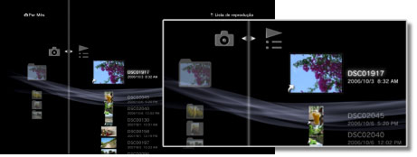
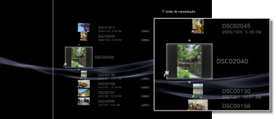

Fotografia > Utilizar listas de reprodução > Editar listas de reprodução
Editar listas de reprodução
Pode adicionar imagens ou eliminar imagens de uma lista de reprodução ou reordenar as imagens de uma lista de reprodução.
Adicionar imagens a listas de reprodução
1. |
Seleccione |
|---|---|
2. |
Seleccione a lista de reprodução que pretende editar e, em seguida, prima o botão |
3. |
Seleccione [Editar].  |
4. |
Prima o botão |
 (Fotografia) >
(Fotografia) >  (Listas de reprodução).
(Listas de reprodução). .
. e seleccione a imagem que pretende adicionar à lista de reprodução de entre as imagens guardadas no armazenamento do sistema.
e seleccione a imagem que pretende adicionar à lista de reprodução de entre as imagens guardadas no armazenamento do sistema. para parar a edição.
para parar a edição.Eliminar imagens de listas de reprodução
1. |
Seleccione |
|---|---|
2. |
Seleccione a lista de reprodução que pretende editar e, em seguida, prima o botão |
3. |
Seleccione [Editar]. |
4. |
Seleccione a imagem que pretende eliminar da lista de reprodução e, em seguida, prima o botão |
 . A imagem é eliminada da lista de reprodução. Quando terminar de eliminar imagens, prima o botão
. A imagem é eliminada da lista de reprodução. Quando terminar de eliminar imagens, prima o botão Notas
- Mesmo que uma imagem seja eliminada de uma lista de reprodução, o ficheiro da imagem não é eliminado do armazenamento do sistema.
- Se uma imagem adicionada à lista de reprodução for eliminada do armazenamento do sistema, a imagem será automaticamente eliminada da lista de reprodução.
Reordenar imagens numa lista de reprodução
1. |
Seleccione |
|---|---|
2. |
Seleccione a lista de reprodução que pretende editar e, em seguida, prima o botão |
3. |
Seleccione [Editar]. |
4. |
Seleccione a imagem que pretende mover e, em seguida, prima o botão  |
5. |
Utilize os botões |
 .
.
 para mover a imagem para a posição pretendida e, em seguida, prima o botão
para mover a imagem para a posição pretendida e, em seguida, prima o botão